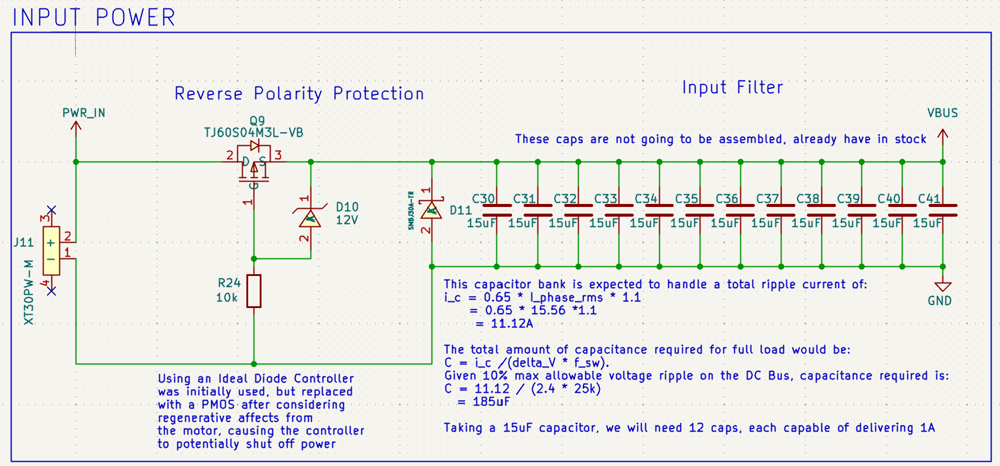
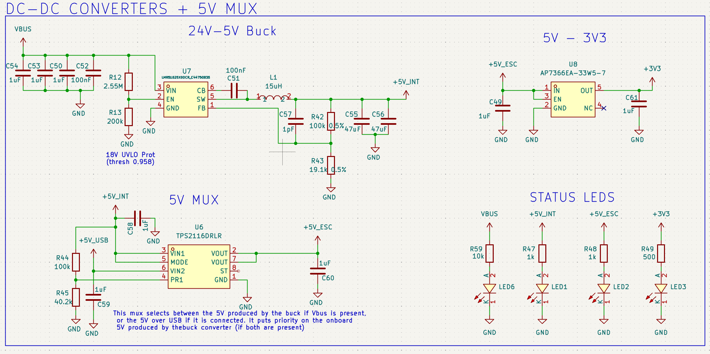
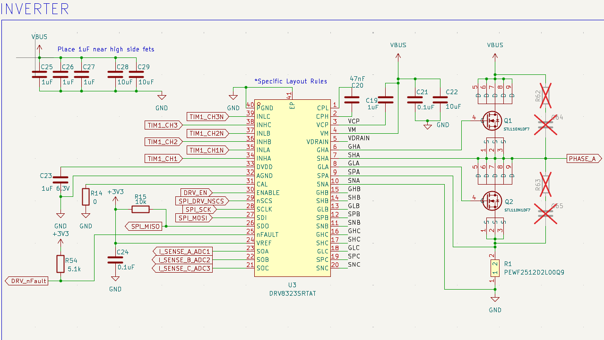

Schematic Overview:
Input Power + Filters

This section is concerned with the power input to the board, and is separated into the reverse polarity protection, and the inverter DC link capacitor selection (cap bank). The main motivation for reverse polarity protection is the number of times I have seen a board get fried due to harnessing mismatches or mistakes. For the reverse polarity protection, at first a strategy with an ideal diode controller was implemented using the AP74700QW6-7, as it was a more efficient protection measure using an N-MOS with less power dissipation, and was a better option for BOM costs. However, as highlighted by many ideal diode controller datasheets, and in TI’s Basics of Ideal Diodes (https://www.ti.com/lit/an/slvae57b/slvae57b.pdf?ts=1788693596748) documentation, this strategy does not allow for reverse current. For an application such as this one, where I am not using a braking resistor, I would like for the excess current coming back from the motors to flow back to the battery, where the pack can help deal with these current spikes. That said, I went with the next best recommended approach by TI, which is the PMOS + Zener Diode Combination. Here, the PMOS acts as the switch to allow the current to flow to the rest of the board, while the Zener diode ensured that the gate voltage of the PMOS stays below the VGS rating.
The sizing and selection for the capacitors in the filter bank was done so according to what was read in this article (https://www.specterengineering.com/blog/2019/9/7/dc-link-capacitor-selection-for-your-inverter). This article was tailored specifically for DC link capacitors in 3 phase inverter systems, such as this ESC. Essentially, the role of this bank is split into two, where the number and size of capacitors plays a role to satisfy the boards ripple current requirements, whereas the overall capacitance helps satisfy the ripple voltage requirements. The article provides the math required, and examples of selecting the right filter for your requirements. The math which was done is available on the schematic itself.
DC-DC Converters

This motor controller has 3 power rails:
- 24V: Main bus voltage used to drive the motors
- 5V: Used to power communication peripherals, controls of lower power circuits, and intermediate stage for the 3V3 LDO.
- 3V3: Logic Level used by the MCU.
For the 5V converter, a buck converter was selected by using TI’s webench designer and filling in the desired specs of the converter. In this case, a 2.5A converter was selected as to provide enough current to both the 3V3 converter, as well as the other peripherals on 5V, while allowing a large margin to avoid any thermal issues. To achieve the 3.3V rail, a simple LDO was selected as it is only used to power the MCU and to act as a reference voltage, hence very little current is being consumed.
A 5V mux is also required on the board due to the presence of a USB peripheral. The TPS2116DRLR is responsible for determining which 5V is used on the board, before the 5V rail provides power to all the other systems. It selects between the internal 5V generated by the buck, or an external 5V coming from USB. This allows the board to be flashed over USB without requiring a 24V supply by simply plugging in your computer, while eliminating any potential damages (to both the laptop and the board) caused by keeping USB plugged in while the board is powered on.
Inverter

Gate Driver:
The inverter is responsible for driving the different phases of the motor. Before selecting the IC that is shown above, I was debating between having 3 separate half bridge gate drivers and one 3 phase motor driver IC. The main benefit of the 3 different half bridge drivers was complexity, offering a simpler approach, and that I have a lot of previous experience working with a OTS ESCs which used this type of configuration. However, the multiphase motor drivers offered many more features in comparison, is more modern, and was significantly cheaper than the alternative, therefore this board makes use of the latter strategy. The IC which was selected for this is TI’s DRV8323SRTAT. This variant was selected due to the features which it offered, which catered exactly to the needs of this project. The ones which were most compelling were:
- Triple Low side Current Sense Amplifiers:
Although the MCU I am having has the option to use internal amplifiers, those were still single ended, whereas this option is differential, offering better signal quality.
- Integrated Protection Features:
UVLO, Charge pump UV, OCP, GDF, Thermal Shutdown, nFAULT indicator, all very useful for fault detection and all comes in one package, instead of requiring to only rely on software solutions or extra circuits.
- 6 to 60V Operating range:
Many candidate half bridge drivers which were also suitable would have required another intermediate voltage rail on the ESC (likely 12V), this gets around that.
Other variants in the same family exist, such as those with an internal 5V buck, which could be cool if it works with your project, but for my application, the 600mA rating of the internal buck is too low.
Full Bridge
The MOSFETs which I selected for the 3 full bridges are ST’s STL110N10F7. They offer great performance at a great price, and they have proven reliability as I’ve used them in other brushless motor applications, and they haven’t failed yet.
Current Sensing
For current sensing, a sense resistor placed on the low side of the phases is used. In general, there are three different approaches to sensing current with a sense resistor for phases each highlighted in ST’s documentation (https://www.st.com/resource/en/application_note/an6320-current-sensing-in-bldc-motor-application-stmicroelectronics.pdf ):
- Low side global current sense
- Low side current sense
- High side current sense
- Inline phase current sense
While inline current sensing provides the most accurate reading, a per phase low side current sense strategy is used on this board as it is more convenient to route on such a dense 4-layer board, without extra manufacturing associated costs. That said, I think this strategy is still viable, and the only extra case to watch out for is when PWM nears 100%, and the low side see’s very little on time. The calculations associated with the sense resistors and power dissipation can be read on the schematic.
R-C Snubber
Across each MOSFET of the full bridges, I also placed pads for the RC snubber circuits. Essentially, the ringing which will be associated to the switching power MOSFETs can cause excessive dissipation, and overstress the system. Many online folks mention how this process is usually determined experimentally, where values for R and C are calculated, and later added back to prevent the ringing, therefore, empty pads are places as close as possible, across each of the 6 MOSFETs used in the inverter.